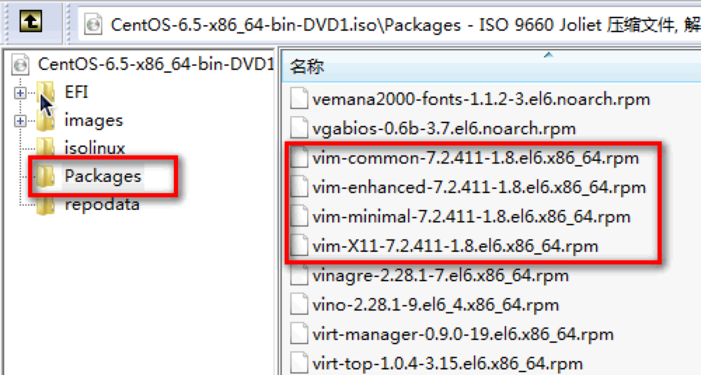
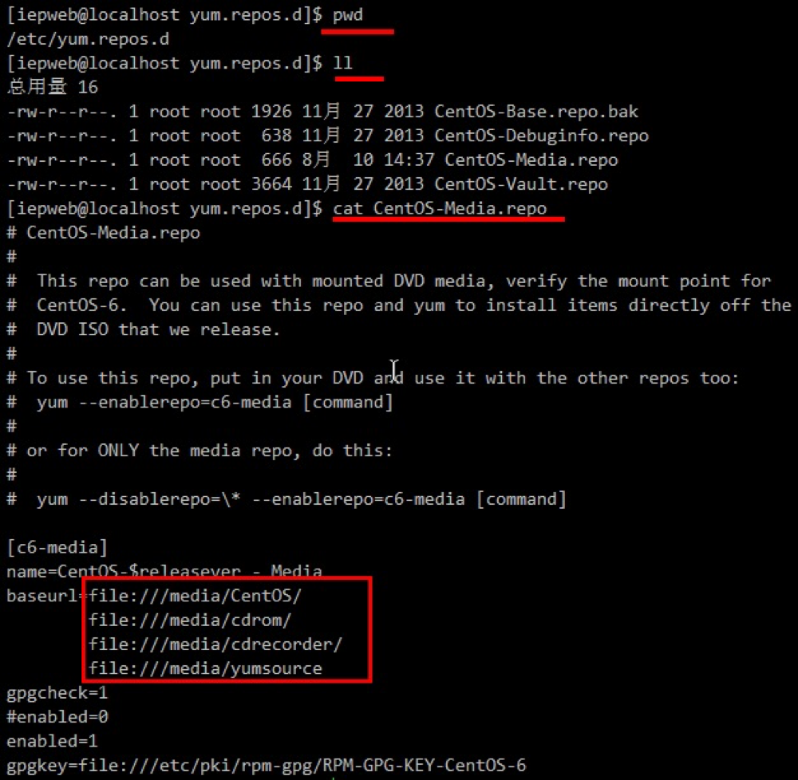
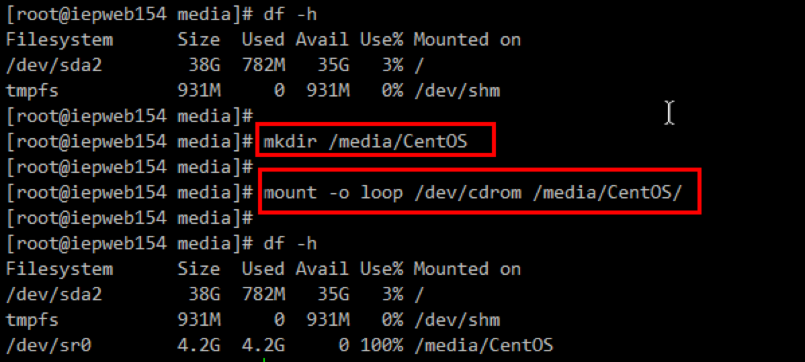
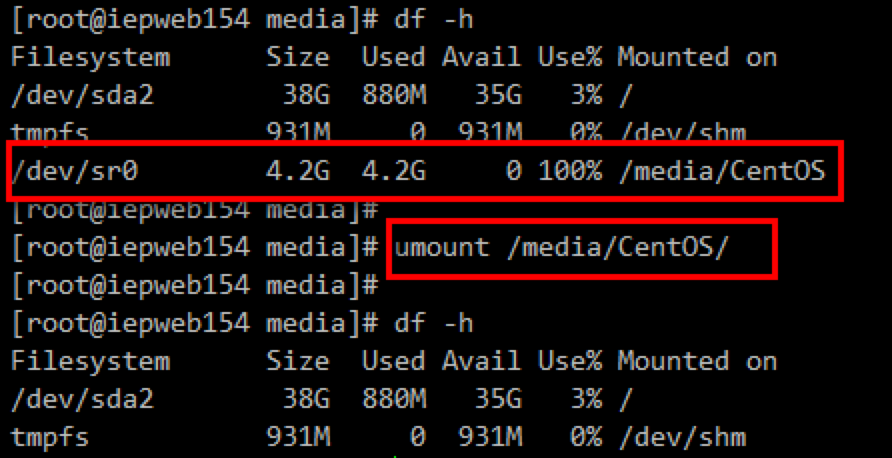

转载他人的文章主要说明下如何配置linux上的本地yum源，主要关于一些原理上的说明。
yum是什么，yum源又是什么
在windows上安装一个软件，我们可以通过360管家。因为360管家提供了软件的安装，卸载，并且解决了软件之间的依赖等相关问题，使得我们能够一键安装。在linux上有一个提供了和360管家类似功能的工具，叫做yum。使用yum我们就可以做到一个命令安装软件，并且不同的发行linux有不同工具，例如红帽（read hat）linux就使用的rpm全称就是read hat package manager 红帽软件包管理工具。
yum源是什么呢？我们安装软件的时候需要下载软件，将很多软件放在一起就是源。软件安装包的来源。所以yum源就是软件安装包来源。如果我们是在线的，他会在网上给你下载安装包，如果是离线的没有网络。那么就只能配置本地的yum源了。
本地yum源是什么呢？
上面说过yum源就是软件安装包的来源，但是这些安装包哪里有呢？其实在linux的安装镜像中就有的，linux已经将常见的安装包放到了linux镜像中。如果你使用压缩文件打开linux的iso镜像文件，你会发现在根目录下有个文件夹：packages

上图就是使用压缩软件打开的系统盘内部情况，比如我们常用的工具vim，就是在这里面的。所以说： 系统的安装镜像就可以当作yum源。
与yum源相关的配置文件

上图就是yun源相关的配置，在路径/etc/yum.repos.d/目录下，一共4个文件，说下两个常用的。
CentOS-Base.repo：有网的环境下默认使用这个，这个是第一优先级。因为没网，所以修改文件名，设置成备份文件。这样系统就会使用第二优先级的文件。
CentOS-Media.repo：没网的环境下使用这个，在上图中会发现他默认配置了4个路径，第4个yumsource是我自己加的。意思是说，如果系统检测yum使用了离线安装，那么会从上到下从这4个路径中查找安装软件。所以我们只要把光盘挂载在这四个目录下的任意一个目录即可。同时，该配置文件默认是不启用的，如果想使用需要 修改倒数第二行的enabled为1，否则该文件无效。
media目录与mnt目录
挂载光盘或者u盘等使用的mount命令，但是你百度所有会说有挂在media目录下，也有挂载在mnt目录下的。这两个目录区别是什么呢？
media：挂载一些移动设备，例如光盘，U盘等。
mnt：挂载一些硬盘等设备。所以我们的光盘应该挂载在media目录下，从yum给的默认配置文件也能看出。
挂载光盘到系统上

如上图，首先执行df -h命令发现当前系统没有光盘信息，然后挂载目录之后，在查看就发现我们把光盘挂载到了系统上，光盘大小4.2G。
-o loop ：指定挂载文件类型，说简单点就是我要挂载的是光盘这种设备。
卸载光盘

执行df -h发现光盘是挂载的，然后执行umount命令之后，在查看发现设备被卸载了

...
...
This is copyright.